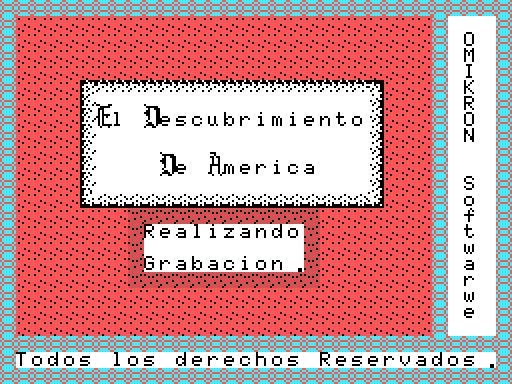

Hallazgos
Lo que aparecio al desmontar la cinta. Todo lo de aqui esta medido -ejecutando el formato, leyendo las constantes con las que el codigo cuenta, o cotejando contra la maquina-, no deducido del aspecto de los bytes. Lo que no esta cerrado no esta aqui: esta en Preguntas abiertas.
0xD300 no es codigo: es un puntero
El BIN CARGA va de 0xC000 a 0xD3DF, pero su direccion de ejecucion es 0xD302, no 0xD300. La razon esta en esos dos bytes: valen 69 D3, o sea la palabra 0xD369, que es el bucle que lee un bloque de cinta.
La primera parte del juego termina asi:
5CC2 ld hl,(0xD300)
5CC5 push hl
5CC6 retCon eso vuelve al cargador a pedir la segunda parte sin llevar la direccion escrita en su propio codigo. El cargador de 0xD300-0xD3DF sobrevive a los dos programas porque ningun bloque de cinta pasa de 0xD2FF.
La BIOS no lee los dos bloques grandes
Los ficheros 04 y 05 de la cinta no tienen cabecera. Los lee a mano el bucle de 0xD369 con TAPION y TAPIN, byte a byte, y reparte cada uno en tres bytes de sincronia (03 02 01), 0x2400 bytes a 0x4000 y 0x5300 bytes a 0x8000.
3 + 9216 + 21248 = 30467que es exactamente lo que mide el bloque 05. El 04 mide cinco bytes mas, y son relleno de alineacion del .cas: ceros, comprobado.
De ahi que las dos mitades del juego ocupen exactamente las mismas direcciones, y de ahi que este desensamblado sean cinco listados y no uno.
El interior de la carabela: 128 x 52 baldosas
La segunda parte no transcurre en pantallas: transcurre dentro de un corte longitudinal del barco de 1024 x 416 pixeles, con cubierta, tres mastiles con sus velas y sus escalas de jarcia, y tres crujias de camarotes y bodega por debajo.

Los 0x1A00 bytes van de 0x9000 a 0xA9FF. Lo que dice que el ancho es 128 no es ninguna constante declarada: es el paso de 0x80 entre filas del bucle de 0x4285. La comprobacion de que esta bien leido es que la ventana de 32x24 que recorta el juego coincide con el emulador en las 768 baldosas, cero diferencias.
Lo que compras se ve estibado en la bodega
Las cinco mercancias se compran en el almacen del muelle, cada una a costa de una de las dieciseis unidades de DINERO. Pero el numero no se queda en un contador: la rutina de 0x4F60 de la segunda parte estiba la carga en la bodega, un monton por mercancia y tantas piezas como unidades queden.

Dibujadas, las baldosas de cada monton son toneles de duelas para el agua y el vino (0xBF-0xC4), sacos atados para la comida (0xB9-0xBE), tablones apilados (0xC6-0xC8) y rollos de tela (0xC5, 0xC9 y 0xCA).
Que contador es cada rotulo hay que medirlo, y el paso los cruza
Al acabar la primera parte se ve un resumen con siete cifras. Los rotulos son dibujo, no texto, asi que no se puede suponer cual es cual -y el primer intento de este desensamblado lo tuvo mal-.
La forma de medirlo: el bucle de 0x5D0C pinta las catorce cifras en baldosas seguidas a partir de la 188, asi que basta buscar esas baldosas en la tabla de nombres de 0xC310 para ver bajo que rotulo cae cada una.

| contador | rotulo | fila, columna | pasa a |
|---|---|---|---|
| 0xF8B4 | AGUA | 13, 9 | 0xD6D9 -> 0xF39A |
| 0xF8B5 | VINO | 18, 9 | 0xD6DA -> 0xF39B |
| 0xF8B6 | COMIDA | 8, 9 | 0xD6DD -> 0xF39E |
| 0xF8B7 | MADERA | 5, 22 | 0xD6DB -> 0xF39C |
| 0xF8B8 | TELA | 12, 22 | 0xD6DC -> 0xF39D |
| 0xF8B9 | MARINERO | 17, 22 | 0xD6DE -> 0xF39F |
| 0xF8BA | DINERO | 4, 9 | no se pasa |
No siguen ni el orden de las direcciones ni el de la pantalla, y el paso por 0xD6D9 cruza la COMIDA con la MADERA. Un test fija las posiciones.
Con la tabla en la mano la segunda parte se lee sola: 0xF39A y 0xF39B son la bebida y se gastan uno tras otro -primero el agua, luego el vino-, 0xF39E es la comida y tiene su propio ciclo, 0xF39C es la madera con la que se tapa la via de agua, 0xF39D la tela con la que se sofoca el fuego, y 0xF39F cuanta tripulacion hay a bordo.
7.564 bytes que no lee nadie, y uno de ellos es una foto de la memoria
La cinta graba bloques de tamano fijo pase lo que pase, pero el programa de la primera parte acaba en 0x5F9F y el de la segunda en 0x5C3F. Detras se grabo lo que hubiera en memoria: 7.564 bytes de 66.016, el 11,5 %, identificados y contados pero que ninguna instruccion toca.
Uno de esos restos se puede leer entero. De 0xCC56 a 0xD2FF, la primera parte lleva 1.706 bytes identicos al fichero CARGA salvo un byte -el propio 0xCC56, que alli vale 0x1F y aqui 0x19-. Es la pantalla de carga, todavia puesta en memoria cuando se grabo el bloque. No la lee nadie: la unica rutina que la volcaria es la de 0xD330, y esa solo corre al entrar por 0xD302, cosa que ya habia pasado antes de que ese bloque existiera.
La segunda parte, en las mismas direcciones, trae otra cosa: solo coincide el 4,1 % de los bytes.
Los tres programas acaban con una copia truncada de si mismos
Los tres terminan con un trozo de su propio codigo repetido, siempre cortado a media instruccion:
| programa | restos | copia de |
|---|---|---|
carga | 0xD3D8-0xD3DF | 0xD358-0xD35F |
| primera parte | 0x5F9F-0x5FF7 | 0x5F1F-0x5F77, 0x80 mas arriba |
| segunda parte | 0x5C42-0x5C79 | 0x5BC2-0x5BF9 |
Las tres comprobadas byte a byte. No las ejecuta nadie; parece un desliz de la herramienta con la que se montaron los bloques.
La firma de la casa trae una errata, y esta en la cinta
Descodificada la tabla de nombres de 0xD000, en el margen derecho de la pantalla de carga se lee en vertical "OMIKRON Softwarwe", con dos w. La errata esta en la cinta, no en este desensamblado, y hay un test que la fija.

Las letras no son ASCII: son indices de baldosa, y van en dos alfabetos distintos dentro de la misma tabla -0x00-0x19 y 0x20-0x39, dos juegos de baldosas para las mismas veintiseis letras- mas seis baldosas (0x3A-0x3F) para las mayusculas grandes de dos baldosas de alto con las que empiezan "El", "Descubrimiento" y "America". El espacio es 0xFF.
Un marcador escondido dentro de los propios dibujos
El arranque de la primera parte hace:
420A ld a,(0xC103)
420D cp 8
420F call nz, voltea_los_patrones0xC103 no es una variable: es un byte de la tabla de patrones, usado como marca para no voltear dos veces los mismos dibujos. La rutina de 0x561D invierte el orden de los bits de cada byte entre 0xC102 y 0xC138, que es como el juego consigue el dibujo espejo sin gastar mas cinta.
La musica solo va colgada de la interrupcion en la primera mitad
La primera parte instala un JP en H.KEYI (0xFD9F) apuntando a 0x4046, y la musica suena en cada interrupcion de barrido, antes de que la BIOS lea el teclado. El estado son catorce bytes seguidos (0xF8CB-0xF8D8) con tres bytes por canal, y por eso el cursor de 0x4181 avanza de tres en tres y la misma rutina vale para los tres canales sin una sola tabla. Hay dieciseis melodias indexadas en 0xCB95.
La segunda parte no instala nada: escribe el PSG directamente desde el bucle principal, en 0x5213. Comprobado buscando escrituras a 0xFD9A y 0xFD9F en todo el codigo trazado: no hay ninguna.
La pantalla 7 no tiene tabla de nombres propia
Las pantallas 0 a 6 de la primera parte llevan cada una su tabla, separadas exactamente 0x300 bytes, de 0x82F5 a 0x94F5. La septima no: se compone recortando 32 columnas de un mapa de 64x24 que vive en 0x97F5, y el recorrido lateral es de media pantalla -el contador de 0xF89D va de 0 a 0x20-.

En las cinco piezas no hay ni un credito
Barridas las cinco por cadenas ASCII, solo salen tres bloques de texto: la presentacion (0x8200), los once rotulos de pantalla (0xC28A) y los cinco desastres de la travesia (0xCBF2). Ni un nombre, ni unas iniciales, ni una fecha de compilacion.
El unico nombre de toda la cinta es el de la casa, y esta dibujado, no escrito.